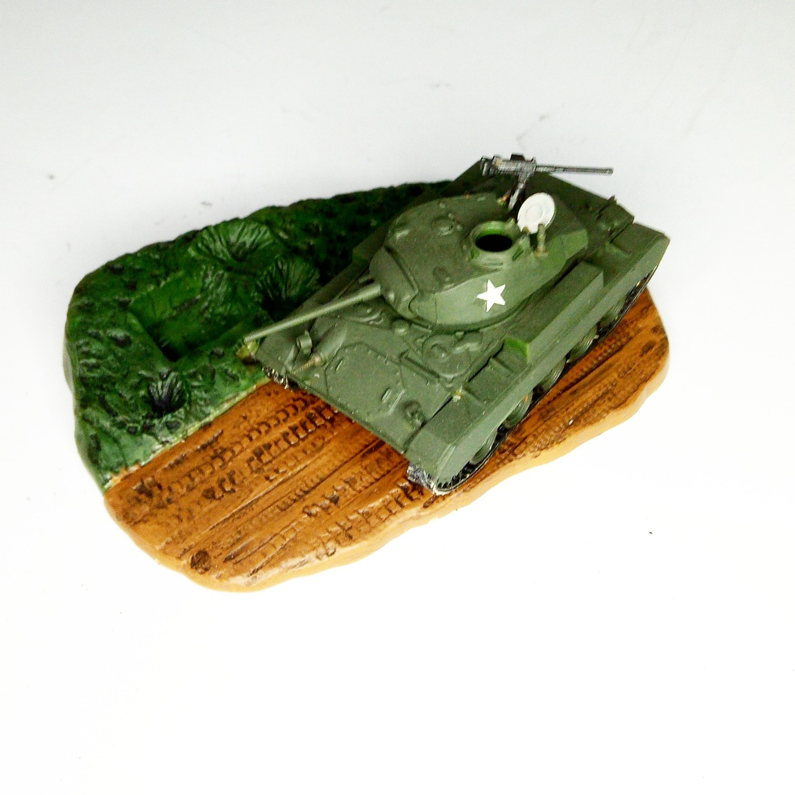

Mezzi militari · scale model archive
M24 Chaffee tank
M24 Chaffee tank — Kit: Matchbox, Scale: 1/72. Matchbox had a great idea by including a small diorama base with the kit. #1/72 #Matchbox

Photo gallery
English description
Matchbox had a great idea by including a small diorama base with the kit.
#1/72 #Matchbox
Descrizione italiana
Matchbox had una great idea by including una small diorama base con il kit.